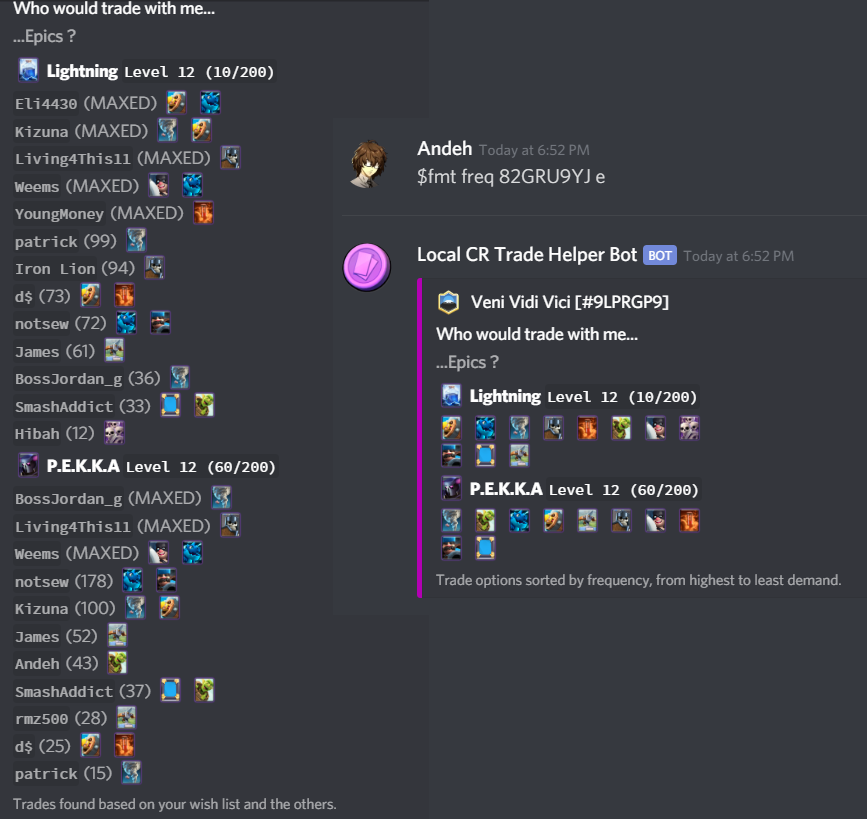
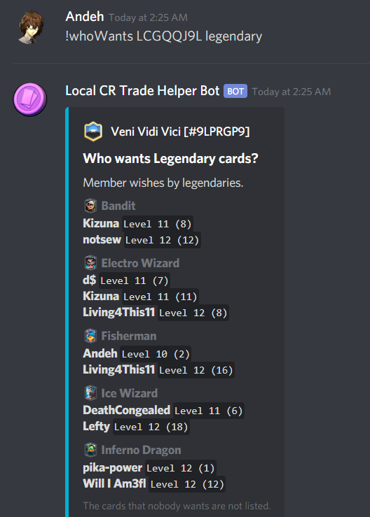

Trade Helper Bot
Created by Eitri Ymir
NOTE: I am not the owner of this bot. All credit goes to Eitri Ymir. I am only explaining the bot's functions and my contributions, and since the GitHub repo is private, I will respect that privacy and not share any code.
1. Introduction
1.1. What are trades?
If you know what Clash Royale is, skip this section. Otherwise, I'll keep this brief.
In Clash Royale, players battle each other in a 1v1 setting to destroy each other's towers. They make decks composed of troops, spells, and/or buildings, which are represented by cards. Players collect cards to level them up to the max level (13).
There are four rarities of cards in the game, by increasing difficulty to obtain (shown left to right in above picture): Common, Rare, Epic, and Legendary.
Recently, an update in Clash Royale introduced Trade Tokens, in which players can trade cards of the same rarity with each other (within the same clan). One player posts a trade and offers up to four cards to give away, and another player can accept it. Both players must have a trade token of the same rarity. The tradable quantities are: 250 Commons, 50 Rares, 10 Epics, and 1 Legendary. And if a player has a card maxed, they can infinitely give that card at the cost of gold!
Above are some examples of completed trades.
1.2. Issues
In order for trade tokens to be used, other people have to find the offers appealing. Since both sides of each trade require a token, they need to be mutually beneficial. Communication plays a huge role in the success of trades.
So all people have to do is communicate. What's the problem?
It sounds much easier than it actually is. There are many problems people encounter when trying to trade:
- Players post trades without considering which cards the rest of the clan wants, resulting in trades that never get accepted.
- Certain cards are so popular that everyone requests them and it's difficult to receive in a trade no matter what.
- Players respond to trades by requesting another card that wasn't offered (known as a counter offer), not knowing if the other player has or wants that card.
- Players ask others if they have a certain card because there's no way of viewing another player's card collection in-game. Sometimes they're left with no response for hours, since it depends on the other player's activity.
1.3. Solution
Even though you can't see people's card collections in-game, there exists a public source that displays real-time information about player and clan data. This is a REST API called RoyaleAPI. In this API, you can navigate to each player's profile and look at their card collection. As an example, here's my card collection. You can even sort the cards by "Trade" to see how many times I can trade away each card!
But is the solution really telling my entire clan to look online and find out who in the clan has the card they want? Clans can have up to 50 players. Looking through up to 49 other players' card collections can be time consuming!
Fortunately, RoyaleAPI allows developers to access their API endpoints to obtain the real-time data, which includes accessing every player in a clan, and how many of each card each player has. The data obtained is returned in JSON, which we can then parse to get and display the card information we need. More information can be found in their documentation.
That leads to the creation of this bot. A clanmate of mine, Eitri Ymir (who goes by the in-game name Gleipnir), decided to create a bot using Java for our clan's Discord server. This bot allows players to enter commands in the Discord channel to display trading information, such as who has a certain card. The bot then web-scrapes from RoyaleAPI and sends back a list of all players who fit the criteria.
2. Commands
2.1. saveTag
In Clash Royale, every player has an identifier known as a player tag. How will the bot know which clan its searching in? This is the main purpose of the MySQL backend: when a player runs the saveTag command followed by their player tag, the player's Discord account is mapped to that player tag. That way, when any command comes from this user, the tag will be used to identify the clan the player is in so that the data returned is from all other players in that clan. For this reason, every command verifies that the user has a tag saved.
Here is an example, with me saving my player tag to my Discord account:
My clan is Veni Vidi Vici (#9LPRGP9). The next time I call any command, it will find the clan associated with my player tag, and then go through the profiles of every other player in my clan.
2.2. whoHas
This is the most important function of the bot: to display who has any card.
When a player runs the whoHas command followed by the card they want, the bot will search through every player in the clan. If a clanmate has enough tradable cards (depending on the rarity), then they will show up on the resulting list. Their name will be green if it isn't on their wish list, and red otherwise (indicating that they will not trade away that card). So, people in the clan can simply run this command and ask anyone who has a green name if they want to trade!
Here is an example with the newest card, Elixir Golem, which not many people in the clan have.
NOTE: You may see that I'm running this on a local copy of the bot and I've added a player tag as a parameter. This version of the bot is used to test important changes and is exclusively used by me, so there is no need for a database.
2.3. wl, awl, rwl (Wish List Commands)
So how do we know which players want to obtain a certain card? This bot allows players to form wish lists, adding the cards that they want to obtain or save up, to make communication even clearer!
The commands are: awl (adding a card to a wish list), rwl (removing a card from a wish list), and wl (viewing your own or someone else's wishlist).
As shown in whoHas, anyone who has the requested card in their wishlist will be marked as red. This makes player-to-player communication much easier because you won't be asking from people who you know won't give you the card you want!
2.4. whoWants
Just like whoHas, you can iterate through the wishlists of every player in your clan to see who wants a certain card. So if there's a card that you want to give away, you can find out who would find that offer appealing, then see what cards they can give you!
Here's an example of finding a compatible trade between two players! The Log is the hardest legendary to get in a trade (just look at how many people want it!) Fortunately, someone who doesn't care about that card wants another legendary, Lumberjack, which the player has. With some communication, both wishes are fulfilled!
2.5. whoTakes
If there's a particular card that you want to give away in exchange for a card you want, this is the command for it.
This is like a combination of whoHas and whoWants. When entering whoTakes Mega Minion for Elixir Golem, it's basically the same thing as: which players fall under both whoWants Mega Minion AND whoHas Elixir Golem? In this case, two people perfectly fit the deal.
2.6. findMeTrades
Time for my favorite command. Honestly, I think it's genius.
For each card on your wishlist, it gets every single trade possible based on other people's wishlists. All you have to do is enter a rarity, and it will get all of the possibilities for your wishes of that rarity.
So let's say one player is looking for an epic trade, and has two epic cards on his wishlist. He puts in fmt epic, and for both cards, it shows a list of every player who would be willing to give that card, as well as the icons of the cards that they would want to receive.
One of the best parts of this command is that instead of asking other players, you could use this list to quickly figure out what certain people want or which cards you should offer to have the best chance of getting your trade accepted. It's my goto for giving suggestions on what cards players should offer in a trade.
2.7. myTradableCards
A newer and requested command, this command simply shows all of the cards in your or another player's collection that are tradable. This is a quick and easy way to view which cards you're able to trade away.
This is also useful if you want to trade with a specific person but don't have a card that you want in mind. You can see what they have and decide from there what you would want to request from them!
2.8. maxedCards
Another requested command, which accepts a rarity as a parameter and shows a list of who has each card of that rarity maxed. Knowing who has a certain card maxed is useful because if they're willing to spend gold, you can ask them for trades because they can trade that card away infinitely.
3. My Features/Changes
3.1. Priority System
The fmt command has had a decent success rate in my clan, but there are still some misinterpretations when players add cards to their wish lists.
Players add cards to their wish lists when they want to hold on to a card, but that doesn't mean they want to receive the card at the moment. This doesn't affect commands like whoHas, since their name being red is accurate (they don't want to give the card away). However, fmt will display that person as willing to receive the card anyway. This has caused some miscommunications and for the overall results of the list to be less accurate.
Since there are many benefits to maxing a card one at a time, players often have a single card that they're aiming for, despite having multiple wishes. I wanted to make sure that fmt results only show those prioritized wishes. This could be done by allowing a player to indicate which card they wanted the most. I did this by adding a "priority" field to every wishlist.
When prioritizing a card, that prioritized card is indicated by an asterisk (*) when viewing it in a wishlist. Only one prioritized card is allowed per rarity.
So in my case, I have both Musketeer and Battle Ram in my wishlist, but I'm focusing on leveling up musketeer. But I don't want to give away battle ram either.
These are the changes, displaying the before and after in fmt:
In my view (first image), battle ram is no longer in the list of trades that I want to find. In other players' views (second image), battle ram is no longer shown as one of the cards that I want to receive. These changes are also shown in whoWants and whoTakes (if a prioritized wish for a player exists, the option will only show up if it's the prioritized card).
Though it seems like a simple change, having most clanmates tell me which cards they want to prioritize narrows down fmt options to the point where each option is nearly guaranteed if the player has a token. Here are some success cases where I helped my clanmates max their cards by using my version of fmt, which only showed prioritized wishes:
3.2. Truncated fmt view by frequency
Another drawback of the fmt command is that the list of possible trades can become really long if a lot of people have your requested card, to the point that it would be hard to get any meaningful trade information out of it. My response to that would be to count each card icon and see which card is the most requested, so I decided to make that task even easier.
By adding the parameter "freq", instead of giving a list of possible trades by player, you can get a truncated view of card icons from highest to least demand. Here's an example with epics:
So if you wanted to have the best chance of getting a successful trade, you could simply offer the first four cards you see in the list of icons, since they showed up the most in the fmt results!
3.3. Filtering fmt by your maxed cards
Some people have so much gold that instead of offering the most requested cards, they'll just offer whichever cards they have at max level. That way, all they have to do is spend a portion of their gold and they will never lose any cards by using tokens (since the quantities of maxed cards are infinite). But that limits their trading options, which could cause them to struggle to get trades accepted.
By adding the parameter "max", you can filter your fmt results to where it only shows the possible trades where you give away your maxed cards. This helps identify which clanmates are willing to take your offers.
3.4. Displaying wishes in the clan by rarity
This is more of a requested feature, but I wanted to see if I could implement it just for fun. Someone wanted the whoWants command to be paired with rarity, so it displays every wish in the clan of that rarity. This is another quick way to see which cards of a rarity within a clan are popular and should be offered.
3.5. Automatic removal of maxed cards from wl
Once someone maxes a card, there is no reason to receive it in trades anymore. But maxing a card doesn't automatically remove it from the wishlist. The commands will show the player as still wanting the card, which would cause inaccuracy on commands like fmt.
A solution to this was to track the card level in every command and call the remove function every time a maxed card was in a wishlist. For example, by viewing someone's wishlist, any cards in there that are maxed should be removed before the wishlist is displayed.